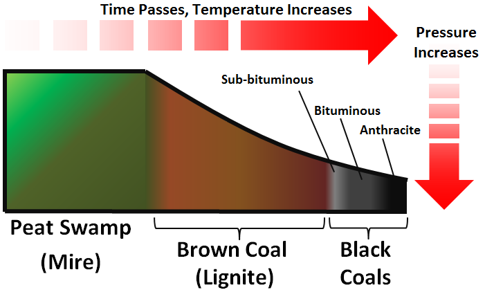

Coal is a combustible black or brownish-black sedimentary rock, formed as rock strata called coal seams. Coal is mostly carbon with variable amounts of other elements, chiefly hydrogen, sulfur, oxygen, and nitrogen. Coal is a type of fossil fuel, formed when dead plant matter decays into peat and is converted into coal by the heat and pressure of deep burial over millions of years. Vast deposits of coal originate in former wetlands called coal forests that covered much of the Earth's tropical land areas during the late Carboniferous (Pennsylvanian) and Permian times. Many significant coal deposits are younger than this and originate from the Mesozoic and Cenozoic eras.Coal is used primarily as a fuel. While coal has been known and used for thousands of years, its usage was limited until the Industrial Revolution. With the invention of the steam engine, coal consumption increased.[citation needed] In 2020, coal supplied about a quarter of the world's primary energy and over a third of its electricity. Some iron and steel-making and other industrial processes burn coal.The extraction and use of coal causes premature death and illness. The use of coal damages the environment, and it is the largest anthropogenic source of carbon dioxide contributing to climate change. Fourteen billion tonnes of carbon dioxide was emitted by burning coal in 2020, which is 40% of the total fossil fuel emissions and over 25% of total global greenhouse gas emissions. As part of worldwide energy transition, many countries have reduced or eliminated their use of coal power. The United Nations Secretary General asked governments to stop building new coal plants by 2020. Global coal use peaked in 2013. To meet the Paris Agreement target of keeping global warming below 2 °C (3.6 °F) coal use needs to halve from 2020 to 2030, and "phasing down" coal was agreed upon in the Glasgow Climate Pact.
There are four stages in coal formation: peat, lignite, bituminous and anthracite. The stage depends upon the conditions to which the plant remains are subjected after they were buried – the greater the pressure and heat, the higher the rank of coal. Higher-ranking coal is denser and contains less moisture and gases and has a higher heat value than lower-ranking coal.
Peat is the first stage in the formation of coal. Normally, vegetable matter is oxidized to water and carbon dioxide. However, if plant material accumulates underwater, oxygen is not present and so only partial decomposition occurs. This incomplete destruction leads to the accumulation of an organic substance called peat.Peat is a fibrous, soft, spongy substance in which plant remains are easily recognizable. It contains a large amount of water and must be dried before use. Therefore, it is seldom used as a source of heat. Peat burns with a long flame and considerable smoke.
Lignite, the second stage, is formed when peat is subjected to increased vertical pressure from accumulating sediments. Lignite is dark brown in colour and, like peat, contains traces of plants. It is found in many places but is used only when more efficient fuel is not available. It crumbles easily and should not be shipped or handled before use.
Bituminous Coal is the third stage. Added pressure has made it compact and virtually all traces of plant life have disappeared. Also known as “soft coal”, bituminous coal is the type found in Cape Breton and is our most abundant fuel. It is greatly used in industry as a source of heat energy.
Anthracite, the fourth stage in coal formation, is also known as “hard coal” because it is hard and has a high lustre. It appears to have been formed as a result of combined pressure and high temperature. Anthracite burns with a short flame and little smoke.